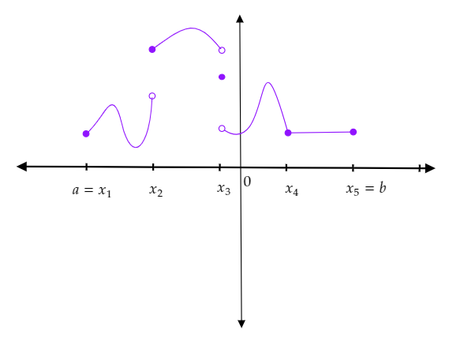

Fonctions continues par morceaux¶
Définition, exemples¶
Définition 4
Une application \(f\) de \([a, b]\) dans \(\mathbb{R}\) est dite continue par morceaux s’il existe une subdivision \(u=(x_i)_{i=0}^n\) de \([a, b]\) telle que pour chaque \(i \in \{1,\ldots, n\}\) la restriction de \(f\) à \(]x_{i-1}, x_i[\) soit continue et admette des limites finies en \(x_{i-1}\) et \(x_{i}\).
La subdivision \(u\) est dite adaptée à la fonction \(f\).
L’exemple suivant donne une illustration graphique d’une fonction continue par morceaux.
Illustration avec un exemple graphique:
{kind=link}
Exemples
Toute fonction en escalier est continue par morceaux.
Toute fonction continue est continue par morceaux.
La fonction \(f\) définie sur \([-1, 1]\) par :
n’est pas continue par morceaux, car elle n’a pas de limite finie à droite et à gauche de \(0\).
Remarques
Comme pour les fonctions en escalier, on peut vérifier que :
si \(u\) est une subdivision adaptée à une fonction \(f\) continue par marceaux, alors toute subdivision plus fine que \(u\) est adaptée à \(f\),
si \(f\) et \(g\) sont deux fonctions continues par morceaux sur \([a, b]\) , alors il existe une subdivision adaptée à \(f\) et \(g\).
Proposition 6
Une fonction continue par morceaux sur \([a, b]\) est bornée sur \([a, b]\) .
Démonstration
Soit \(f\) une fonction continue par morceaux sur \([a, b]\). Soit \(u=(x_i)_{i=0}^n\) une subdivision adaptée à \(f\).
Pour chaque \(i \in \{1, \ldots, n\}\) admet des limites finies en \(x_{i-1}\) et \(x_i\). Donc la restriction de \(f\) sur \(]x_{i-1}, x_i[\) admet un prolongement par continuité sur \([x_{i-1}, x_i]\) qui donc borne. Par suite, \(f\) est bornée sur \(]x_{i-1}, x_i[\). Soit \(M_i = \sup_{]x_{i-1}, x_i[}|f|\)
En prenant \(M = max (M_1, M_2, \ldots, M_n, |f(x_0)|, \ldots, |f(x_0)|)\), nous aurons \(\forall x \in [a, b], |f(x)| \leq M\).
Par suite, \(f\) est bornée sur \([a, b]\).
Proposition 7
Soient \(f\) et \(g\) deux fonctions continues par morceaux sur \([a,b]\). Les assertions suivantes sont correctes :
\( \forall \lambda, \mu \in \mathbb R, \lambda f + \mu g\) est continue par morceaux.
\(fg\) est continue par morceaux.
Démonstration
Soit \(u=(x_i)_{i=0}^n\) une subdivision adaptée à \(f\) et \(g\).
Les restrictions des fonctions \(f\) et \(g\) à chacun des intervalles \( ]x_{i-1}, x_i[\) sont continues et admettent des limites finies en \(x_{i-1}\) et \(x_i\), donc il en est de même pour \(\lambda f + \mu g\) et \(fg\). Les fonctions \(\lambda f + \mu g\) et \(fg\) sont donc continues par morceaux sur \([a, b]\).
Intégrale d’une fonction continue par morceaux¶
Théorème (admis)
Soit \(f\) une fonction continue par morceaux sur le segment \([a, b]\) . Pour tout réel \(\epsilon > O\):
il existe une fonction en escalier \(\theta\) telle que \(|f - \theta| \leq \epsilon\)
il existe des fonctions en escalier \(\varphi\) et \(\psi\) telles que :
Notations: Dans ce qui suit, pour une fonction continue par morceaux \(f\) nous allons adopte les notations suivantes :
\(\mathcal{E}^+(f)\) l’ensemble des fonctions en escalier plus grandes que \(f\).
\(\mathcal{E}^-(f)\) l’ensemble des fonctions en escalier plus petites que \(f\).
Proposition 8
Soit \(f\) une fonction continue par morceaux sur le segment \([a, b]\). Alors :
\(\left\{\int_{[a, b]} \varphi | \varphi \in \mathcal{E}^-(f)\right\}\) admet une borne supérieure,
\(\left\{\int_{[a, b]} \psi | \psi \in \mathcal{E}^+(f)\right\}\) admet une borne inferieure,
de plus,
Démonstration
Soit \(f\) une fonction continue par morceaux sur \([a, b]\). Donc \(\left\{f(x)|x\in [a, b]\right\}\) est une partie non vide de \(\mathbb R\) bornée donc admet une borne supérieure et une borne inferieure. Soit \(m=\inf_{[a, b]} f\) et \(M=\sup_{[a, b]} f\).
Les deux fonctions constantes \(m\) et \(M\) sur \([a, b]\) sont aussi continues par morceaux sur \([a, b]\). \(\left\{\int_{[a, b]} \varphi | \varphi \in \mathcal{E}^-(f)\right\}\) est donc une partie de \(\mathbb R\) non vide majorée (par \(M(b-a)\)). Alors, elle possède une borne supérieure (\(\alpha\)). De même, \(\left\{\int_{[a, b]} \psi | \psi \in \mathcal{E}^+(f)\right\}\) une partie de \(\mathbb R\) non vide minorée donc possède une borne inferieure (\(\beta\)).
Toute fonction \(\varphi \in \mathcal{E}^-(f)\) est inférieure à toute fonction \(\psi \in \mathcal{E}^+(f)\). Par suite :
Fixons \(\psi \in \mathcal{E}^+(f)\). L’ensemble \(\left\{\int_{[a, b]} \varphi | \varphi \in \mathcal{E}^-(f)\right\}\) est majoreé par \(\int_{[a, b]} \psi\). Alors nous avons forcement \(\alpha \leq \int_{[a, b]} \psi\) et ça pour tout \(\psi \in \mathcal{E}^+(f)\). Donc \(\alpha\) est un minorant de \(\left\{\int_{[a, b]} \psi | \psi \in \mathcal{E}^+(f)\right\}\). Par conséquent, \(\alpha \leq \beta\).
Donc
soit \(\epsilon >0\). En utilisant le théorème précédant, il existe deux fonctions en escalier \(\varphi \in \mathcal{E}^-(f)\) et \(\psi \in \mathcal{E}^+(f)\) tel que \(\psi - \varphi \leq \epsilon\).
Donc \(\int_{[a, b]} \psi - \int_{[a, b]} \varphi \leq \int_{[a, b]} \epsilon = \epsilon(b-a)\)
donc \(0 \leq \beta - \alpha \leq \epsilon(b-a)\)
Et ca pour tout \(\epsilon \geq 0\).
Donc \(\alpha = \beta\).
Définition
Soit \(f\) une fonction continue par morceaux sur le segment \([a, b]\).
On appelle intégrale de \(f\) sur \([a, b]\) le réel
Question : Comparer l’intégrale d’une fonction en escalier avec son intégral en tant que fonction continue par morceaux.
Indications pour la réponse
Une fonction en escalier est continue par morceaux ;
si \(f\) est une fonction en escalier, alors \(f \in \left\{\int_{[a, b]} \varphi | \varphi \in \mathcal{E}^-(f)\right\}\) et \( f \in \left\{\int_{[a, b]} \psi | \psi \in \mathcal{E}^+(f)\right\}\).
Nous avons vu que si \(f\) une fonction continue par morceaux sur \([a, b]\), alors \(f\) est bornée. Soient \(m = inf \left\{f(x)| x\in [a, b]\right\}\) et \(M = sup \left\{f(x)| x\in [a, b]\right\}\). \(m\) et \(M\) sont donc des fonctions en escalier sur \([a, b]\). Leurs intégrales sont respectivement \(m(b-a)\) et \(M(b-a)\).
Et puisque \(m \leq f \leq M\), nous avons \(m(b-a)\leq \int_{[a,b]} f \leq M(b-a)\).
Donc, la quantité \(\dfrac{1}{b-a}\int_{[a, b]} f\) est comprise entre \(m\) et \(M\).
Définition
Soit \(f\) une fonction continue par morceaux sur \([a, b]\). La quantité \(\dfrac{1}{b-a}\int_{[a, b]} f\) s’appelle la valeur moyenne de \(f\).